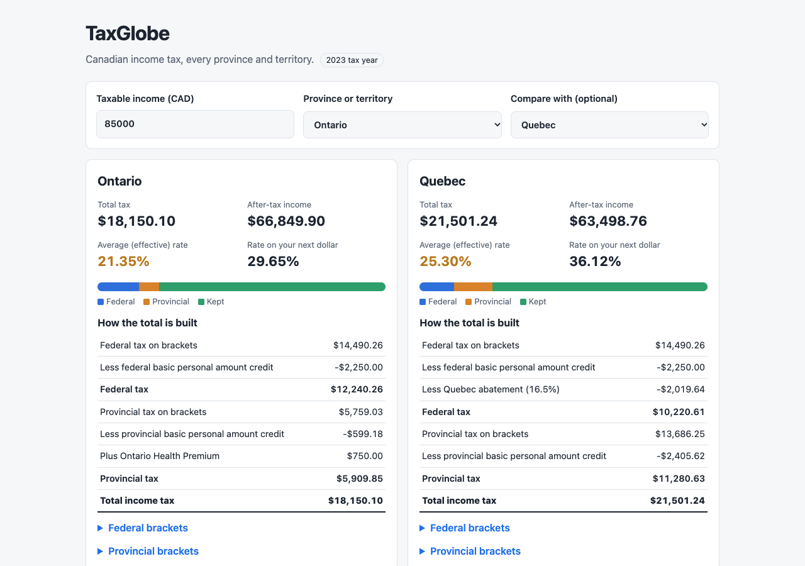
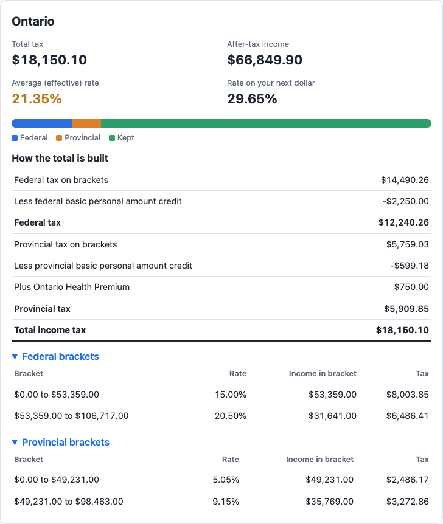
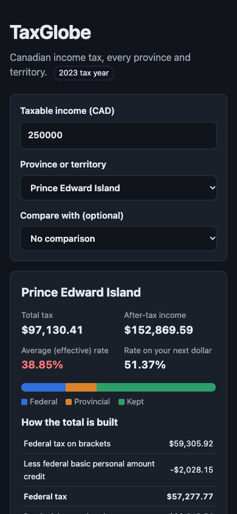

TaxGlobe
Canadian income tax calculator for all 13 provinces and territories, 2023 tax year
Overview

TaxGlobe is a Canadian income tax calculator that runs entirely in the browser. You type a taxable income and pick a province or territory, and it shows the federal tax, the provincial tax, the total, the average rate, the rate on your next dollar and what you keep. Every number updates as you type.
It covers all 13 jurisdictions for the 2023 tax year. Beyond the tax brackets it applies the basic personal amount credit (including the federal phase-out for high incomes), the Ontario surtax and Ontario Health Premium, the Prince Edward Island surtax and the 16.5% Quebec federal abatement. A second dropdown puts two provinces side by side at the same income.
There is no server, no build step and no dependency. The calculation engine is a set of pure functions with no access to the page, which is what makes it testable: 11 tests run in Node, and one of them checks the engine against the published 2023 top tax rate of every province and territory.
The source code is on GitHub at TYFSADIK/taxglobe. The project dates from 2023; the code was rebuilt and published in 2026 with the full credit and surtax rules and the test suite.
What It Calculates
A tax calculator is only as honest as its list of what it leaves out. TaxGlobe shows both lists on the page itself:
| Included | Not included |
|---|---|
| Federal brackets, 15% to 33% | CPP or QPP, EI and QPIP contributions and their credits |
| Provincial or territorial brackets for all 13 jurisdictions | RRSP and other deductions |
| Basic personal amount credit, federal and provincial | Tuition, dependant and other credits |
| Federal BPA phase-out from $165,430 to $235,675 (Yukon follows it) | The Canada employment amount |
| Ontario surtax (20% over $5,315, plus 36% over $6,802 of Ontario tax) | Provincial low-income tax reductions |
| Ontario Health Premium, $0 to $900 | Capital gains and dividend rules |
| PEI surtax (10% over $12,500 of PEI tax) | |
| Quebec federal abatement, 16.5% |
The number you enter is treated as taxable income. The page says so, and calls the result an estimate and a learning tool, not tax advice.
Architecture
The split that matters is between calc.js and app.js. The engine takes numbers and returns numbers; the UI layer reads the form, calls the engine and writes the result. Neither knows how the other works inside.
taxData.jsholds the 2023 brackets and basic personal amounts, one object per jurisdiction, in the same{ min, max, rate }shape as the CRA tables. ADATA VERSION: 2023line sits at the top.calc.jsis the pure engine: bracket tax, credits, surtaxes, the health premium, totals and the marginal rate.app.jsbuilds the dropdowns from the data, debounces input by 150 ms, renders result cards from a<template>withtextContentonly, and keeps the inputs in the URL.test/calc.test.jsruns with Node's built-in test runner. No framework, nothing to install.
Tech Stack
- Vanilla JavaScript (ES modules), the engine and the UI, with no libraries
- HTML5, a form with a number input and two selects, plus a
<template>for the result card - CSS3, CSS Grid for the form and the comparison layout, a light and a dark theme from
prefers-color-scheme Intl.NumberFormat, Canadian dollar formatting- Node test runner (
node --test), unit tests for the engine - 2023 CRA and Revenu Quebec rate tables, the only data source
Build Process
Each jurisdiction is a named object with its brackets and its basic personal amount. The top bracket uses Infinity, so one loop handles every table. Yukon's amount is the string 'federal', because Yukon follows the federal amount and its phase-out.
// taxData.js (excerpt)
export const federal = {
brackets: [
{ min: 0, max: 53359, rate: 0.15 },
{ min: 53359, max: 106717, rate: 0.205 },
{ min: 106717, max: 165430, rate: 0.26 },
{ min: 165430, max: 235675, rate: 0.29 },
{ min: 235675, max: Infinity, rate: 0.33 },
],
bpa: { max: 15000, min: 13521, phaseStart: 165430, phaseEnd: 235675 },
creditRate: 0.15,
quebecAbatement: 0.165,
};
ON: {
name: 'Ontario',
brackets: [ /* 5.05% to 13.16% */ ],
bpa: 11865,
surtax: [{ over: 5315, rate: 0.20 }, { over: 6802, rate: 0.36 }],
healthPremium: true,
},The bracket engine walks the table and taxes only the part of the income that falls inside each bracket. It also records the slice, which becomes the collapsible per-bracket table on the page.
export function calcTax(income, brackets) {
let totalTax = 0;
const breakdown = [];
for (const bracket of brackets) {
if (income <= bracket.min) break;
const taxable = Math.min(income, bracket.max) - bracket.min;
const tax = taxable * bracket.rate;
totalTax += tax;
breakdown.push({ ...bracket, taxable, tax });
}
return { totalTax, breakdown };
}Every taxpayer gets the basic personal amount as a non-refundable credit, worth the amount times the lowest rate. The federal amount shrinks in a straight line between two incomes, so it is a small function of its own.
export function federalBPA(income) {
const { max, min, phaseStart, phaseEnd } = federal.bpa;
if (income <= phaseStart) return max;
if (income >= phaseEnd) return min;
return max - (max - min) * (income - phaseStart) / (phaseEnd - phaseStart);
}Ontario and PEI charge a surtax on their own tax after credits, so the order matters: brackets, then credit, then surtax. The Ontario Health Premium is charged on taxable income in five tiers, each with a cap.
function surtax(basicTax, rules = []) {
return rules.reduce((sum, r) => sum + r.rate * Math.max(0, basicTax - r.over), 0);
}
const provBasic = Math.max(0, pro.totalTax - provCredit);
const provSurtax = surtax(provBasic, prov.surtax);
const premium = prov.healthPremium ? ontarioHealthPremium(income) : 0;Rather than reading a rate out of a table, the engine measures it: tax at income plus $100, minus tax at income, over $100. That way the surtax, the BPA phase-out and the health premium tiers all show up in the marginal rate automatically.
export function marginalRate(income, code) {
return (totalTax(income + 100, code) - totalTax(income, code)) / 100;
}Every intermediate value stays a full-precision float. calcSummary() rounds each displayed amount to the cent with Math.round(v * 100) / 100 as its last step, so rounding errors cannot pile up across brackets.
The UI clones a <template> for each result card and fills it with textContent, never innerHTML. After each render the inputs go into the query string, so a link such as ?income=85000&prov=ON&vs=AB reopens the same comparison.
let debounceTimer;
for (const el of [incomeInput, provinceSelect, compareSelect]) {
el.addEventListener('input', () => {
clearTimeout(debounceTimer);
debounceTimer = setTimeout(render, 150);
});
}How One Result Is Calculated
Here is the worked example the test suite checks, for $60,000 of taxable income in Ontario:
| Step | Calculation | Amount |
|---|---|---|
| Federal tax on brackets | 53,359 x 15% + 6,641 x 20.5% | $9,365.25 |
| Federal basic personal amount credit | 15,000 x 15% | -$2,250.00 |
| Federal tax | $7,115.25 | |
| Ontario tax on brackets | 49,231 x 5.05% + 10,769 x 9.15% | $3,471.53 |
| Ontario basic personal amount credit | 11,865 x 5.05% | -$599.18 |
| Ontario surtax | Ontario tax is under $5,315 | $0.00 |
| Ontario Health Premium | income between $48,600 and $72,000 | $600.00 |
| Provincial tax | $3,472.35 | |
| Total income tax | average rate 17.65%, next dollar 29.65% | $10,587.60 |
The first version of this calculator applied the brackets only and skipped the credits. At $60,000 in Ontario that overstates the tax by $2,849, the two basic personal amount credits together. Adding the credits, then the surtaxes and the premium, is what turned it from a bracket demo into a calculator whose output matches published tables.
Verification
Tax rules are easy to get almost right, so the tests check the engine against numbers published by others, not only against my own arithmetic:
- Top rates: the combined federal and provincial rate at $2 million of income, for all 13 jurisdictions, against the published 2023 tables (chart above). This one test exercises every bracket table, the Ontario and PEI surtaxes and the Quebec abatement.
- Surtax thresholds: published tables say the Ontario surtax starts at $86,698 of taxable income and the PEI surtax at $101,104 for someone with only the basic personal amount. The engine lands on both.
- A mid-bracket rate: PEI at $200,000 is 47.69%, which only comes out right if the surtax and the federal BPA phase-out are both modelled.
- Edges and safety: exact bracket edges do not leak into the next bracket, nobody pays tax below the basic personal amount, the BPA phase-out hits 15,000 and 13,521 at its ends, and every Ontario Health Premium tier lands on its cap.
The rates and amounts were also checked against the source tables while writing the data file. One check caught a real mistake: I first wrote Alberta's basic personal amount as $21,885, which is the 2024 figure. The 2023 amount is $21,003.
$ node --test test/
ok 1 - bracket engine taxes only the slice inside each bracket
ok 2 - exact bracket edges do not leak into the next bracket
ok 3 - no tax at zero income or below the basic personal amount
ok 4 - federal basic personal amount phases from 15,000 to 13,521
ok 5 - Ontario, $60,000: worked example
ok 6 - Ontario surtax starts at $86,698
ok 7 - PEI surtax starts at $101,104
ok 8 - Ontario Health Premium tiers
ok 9 - top combined marginal rates match published 2023 tables
ok 10 - mid-bracket marginal rates match published 2023 tables
ok 11 - effective rate is total over income, net is income minus tax
# pass 11 fail 0Interface
The page is a single form and one or two result cards. Each card leads with four numbers, then a bar splitting the income into federal tax, provincial tax and what you keep, then the step table, then the brackets on demand. The average rate is colour coded: green under 20%, amber from 20% to 30%, red above.


Results appear as you type, with no submit button. Pressing Enter does nothing surprising, and an empty or invalid income simply hides the results and shows the hint again.
Challenges and Lessons Learned
Brackets are not the whole tax. The basic personal amount is worth $2,250 federally and hundreds more provincially, so a bracket-only calculator is wrong for everyone. The lesson: before writing tax code, list every rule in the official calculation, then decide in writing which ones you leave out.
Order of operations matters. The Ontario surtax is charged on Ontario tax after the credit, and the health premium on taxable income. Applying the surtax before the credit gives a different answer. Modelling each rule as a separate step, in the official order, made this visible in the UI too.
Marginal rates are easier to measure than to derive. With surtaxes, phase-outs and premium tiers, the rate on the next dollar is not any single number from a table. Measuring it with a $100 step is simple and always consistent with the totals.
Money and floating point. JavaScript adds 0.1 and 0.2 to 0.30000000000000004. Keeping full precision through the calculation and rounding once, at display time, avoids both visible cent errors and the drift that rounding at every step causes.
Data goes stale every January. Every amount lives in one data file, in the CRA's own shape, under a DATA VERSION line, and the year shows as a badge on the page. Updating the year is a data edit plus new test expectations.
What I Learned
- How Canadian income tax is actually assembled: brackets, non-refundable credits at the lowest rate, provincial surtaxes on provincial tax, and the Ontario Health Premium on income
- The difference between the average (effective) rate and the marginal rate, and why showing both clears up the most common tax confusion
- Testing against external, published numbers catches mistakes that tests against your own arithmetic cannot
- Keeping the calculation pure (numbers in, numbers out) makes it testable in Node with no browser
- Rendering with
textContentand a<template>is as easy as building HTML strings, and closes the door on injection - Putting UI state in the URL makes every result shareable for free
What You Need
| Category | Item | Notes |
|---|---|---|
| Tool | A modern web browser | Everything runs client-side |
| Tool | A local web server, e.g. npx serve | ES modules do not load from file:// |
| Tool | Node.js 20 or later | Only to run the tests |
| Data | CRA and Revenu Quebec rate tables for the year | The only data source |
| Skill | JavaScript modules, the DOM, events | No framework needed |
| Skill | How brackets and non-refundable credits work | The two ideas the engine is built on |
What Is Next
- Newer tax years (2024 to 2026) with a year selector, reusing the same engine
- CPP or QPP and EI contributions, so the after-tax figure becomes true take-home pay for employees
- RRSP and other common deductions, showing how much each one saves at your marginal rate
- Provincial low-income reductions, which matter most at the bottom of the range
- A CSV export of the step and bracket tables
- Publishing a live demo on GitHub Pages